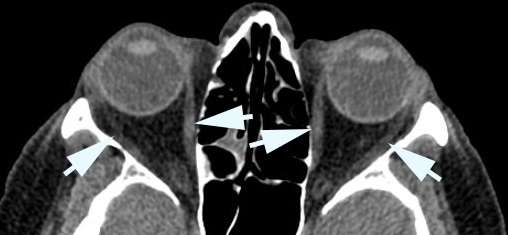

Genetic Extraocular Myopathies

- Disorder of extraocular muscles caused by mitochondrial or nuclear DNA abnormalities
- Common causes: chronic progressive external ophthalmoplegia (CPEO), Kearns–Sayre syndrome (KSS), oculopharyngeal dystrophy (OPD), myotonic dystrophy (MD)
- Uncommon causes: mitochondrial neurogastrointestinal encephalomyopathy syndrome (MNGIE)
-
Core clinical features
- Symmetrically reduced and slow binocular eye movements Chronic Progressive External Ophthalmoplegia
- Often no diplopia because ductional deficits equal in the two eyes
-
Possible accompanying clinical features
- Ptosis
- Convergence weakness
- Pigmentary retinopathy, often asymptomatic
- Iridescent or stellate cataracts (myotonic dystrophy)
- Swallowing difficulty
- Generalized skeletal muscle weakness
- Cardiac conduction defects
-
Imaging features
- Thin (atrophic) extraocular muscles

- Progressive supranuclear palsy
- Chronic inflammatory demyelinating polyradiculoneuropathy
- Fisher variant of Guillain–Barré syndrome
- Myasthenia gravis
- Spinocerebellar ataxia
-
Look for signs that suggest mimickers of extraocular myopathy
- Intact vestibulo-ocular reflex suggests progressive supranuclear palsy
- Numbness and absent deep tendon reflexes suggest chronic inflammatory demyelinating polyradiculoneuropathy or Fisher variant of Guillain-Barre syndrome
- Weakness of orbicularis oculi, neck flexion, proximal limbs; difficulty breathing, eating, or swallowing suggest myasthenia gravis
- Ataxia and nystagmus suggest spinocerebellar ataxia
- Perform muscle biopsy for DNA analysis, electroretinography for pigmentary retinopathy, electrocardiography for cardiac conduction defects, swallowing study for esophageal dysmotility
- Provide genetic counseling if a genetic extraocular myopathy diagnosis is confirmed
-
Trap: sudden death from cardiac arrhythmia and pneumonia from aspiration are major concerns in genetic extraocular myopathies
- Depends on underlying condition